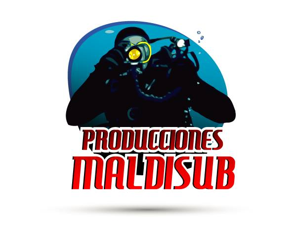

NOTICIAS Y VÍDEOS DE BUCEO DE MALDISUB

Pinchando en los enlaces situados
más abajo, accederás a varios vídeos de mis aventuras
bajo el agua
Artículos
Articulo1
- Vídeo de buceo en Barcos Hundidos PROBANDO
Articulo2
- Vídeo de buceo en Cavernas
Articulo3
- Vídeo de buceo con Tiburones
Articulo4
- Vídeo de buceo Nocturno
Articulo5
- Vídeo de buceo en Agua Dulce